This project serves as the final assignment for the Reproducible Research course. It utilizes a dataset sourced from Kaggle and involves translating the code from Python to R. The aim of this project is to analyze the sleep health of individuals based on their respective lifestyles, incorporating machine learning techniques to enhance the analysis. Variables in this project include:
Gender
Age
Occupation
Sleep Duration
Quality of Sleep
Physical Activity Level
Stress Level
BMI Category
Blood Pressure
Heart Rate
Daily Steps
Sleep Disorder
Introduction
Sleep disorders (or sleep-wake disorders) are difficulties with the quality, timing, and quantity of sleep that cause daily discomfort and impairment in functioning. Sleep-wake disturbances are frequently associated with physical or mental health illnesses such as depression, anxiety, or cognitive difficulties. There are various forms of sleep-wake disorders, with insomnia being the most frequent. Other sleep-wake problems include sleep apnea. Insomnia is a common sleep problem that makes it difficult to get asleep and remain asleep. Meanwhile, sleep apnea is a condition in which you stop breathing while asleep.
Library
# Libraries usedlibrary(dplyr)
Attaching package: 'dplyr'
The following objects are masked from 'package:stats':
filter, lag
The following objects are masked from 'package:base':
intersect, setdiff, setequal, union
This version of gbm is no longer under development. Consider transitioning to gbm3, https://github.com/gbm-developers/gbm3
library(caret)
Loading required package: lattice
library(caTools) library(stats) library(GGally)
Registered S3 method overwritten by 'GGally':
method from
+.gg ggplot2
Data
# Read the datadata <-read.csv('Sleep_health_and_lifestyle_dataset.csv')
Data Cleaning
# Drop NA (if existed)data <-na.omit(data)# Standardize "Normal Weight" and "normal" to "Normal" in "BMI Category"data <- data %>%mutate(BMI.Category =ifelse(BMI.Category %in%c("Normal Weight", "normal"), "Normal", BMI.Category))# View data cleanedhead(data)
# Split the Blood.Pressure column into two new columns and convert to numericdata <- data %>%separate(col = Blood.Pressure, into =c("Systolic Pressure", "Diastolic Pressure"), sep ="/", convert =TRUE) %>%mutate(`Systolic Pressure`=as.numeric(`Systolic Pressure`),`Diastolic Pressure`=as.numeric(`Diastolic Pressure`))# Check the structure of the updated data framestr(data)
Person.ID Gender Age Occupation
Min. : 1.00 Length:374 Min. :27.00 Length:374
1st Qu.: 94.25 Class :character 1st Qu.:35.25 Class :character
Median :187.50 Mode :character Median :43.00 Mode :character
Mean :187.50 Mean :42.18
3rd Qu.:280.75 3rd Qu.:50.00
Max. :374.00 Max. :59.00
Sleep.Duration Quality.of.Sleep Physical.Activity.Level Stress.Level
Min. :5.800 Min. :4.000 Min. :30.00 Min. :3.000
1st Qu.:6.400 1st Qu.:6.000 1st Qu.:45.00 1st Qu.:4.000
Median :7.200 Median :7.000 Median :60.00 Median :5.000
Mean :7.132 Mean :7.313 Mean :59.17 Mean :5.385
3rd Qu.:7.800 3rd Qu.:8.000 3rd Qu.:75.00 3rd Qu.:7.000
Max. :8.500 Max. :9.000 Max. :90.00 Max. :8.000
BMI.Category Systolic Pressure Diastolic Pressure Heart.Rate
Length:374 Min. :115.0 Min. :75.00 Min. :65.00
Class :character 1st Qu.:125.0 1st Qu.:80.00 1st Qu.:68.00
Mode :character Median :130.0 Median :85.00 Median :70.00
Mean :128.6 Mean :84.65 Mean :70.17
3rd Qu.:135.0 3rd Qu.:90.00 3rd Qu.:72.00
Max. :142.0 Max. :95.00 Max. :86.00
Daily.Steps Sleep.Disorder
Min. : 3000 Length:374
1st Qu.: 5600 Class :character
Median : 7000 Mode :character
Mean : 6817
3rd Qu.: 8000
Max. :10000
# Define a function to categorize blood pressurecategorize_blood_pressure <-function(systolic, diastolic) {if (is.na(systolic) |is.na(diastolic)) {return(NA) } elseif (systolic <120& diastolic <80) {return('Optimal') } elseif (systolic <=139| diastolic <=89) {return('Normal') } elseif (systolic >=140| diastolic >=90) {return('Hypertension') } else {return('Other') }}# Apply the categorization function to create the Blood Pressure Category columndata <- data %>%rowwise() %>%mutate(`Blood.Pressure.Category`=categorize_blood_pressure(`Systolic Pressure`, `Diastolic Pressure`))# View the newest datahead(data)
# A tibble: 6 × 15
# Rowwise:
Person.ID Gender Age Occupation Sleep.Duration Quality.of.Sleep
<int> <chr> <int> <chr> <dbl> <int>
1 1 Male 27 Software Engineer 6.1 6
2 2 Male 28 Doctor 6.2 6
3 3 Male 28 Doctor 6.2 6
4 4 Male 28 Sales Representative 5.9 4
5 5 Male 28 Sales Representative 5.9 4
6 6 Male 28 Software Engineer 5.9 4
# ℹ 9 more variables: Physical.Activity.Level <int>, Stress.Level <int>,
# BMI.Category <chr>, `Systolic Pressure` <dbl>, `Diastolic Pressure` <dbl>,
# Heart.Rate <int>, Daily.Steps <int>, Sleep.Disorder <chr>,
# Blood.Pressure.Category <chr>
Data Visualization
age_groups <- data %>%mutate(Age.Group =case_when( Age <=35~"35 and below", Age >35~"35 and above" ))ggplot(age_groups, aes(x = Age.Group, y = Sleep.Duration, fill = Age.Group)) +geom_bar(stat ="summary", fun ="mean") +labs(title ="Mean Sleep Duration by Age Group", x ="Age Group", y ="Mean Sleep Duration (hours)") +theme_minimal()
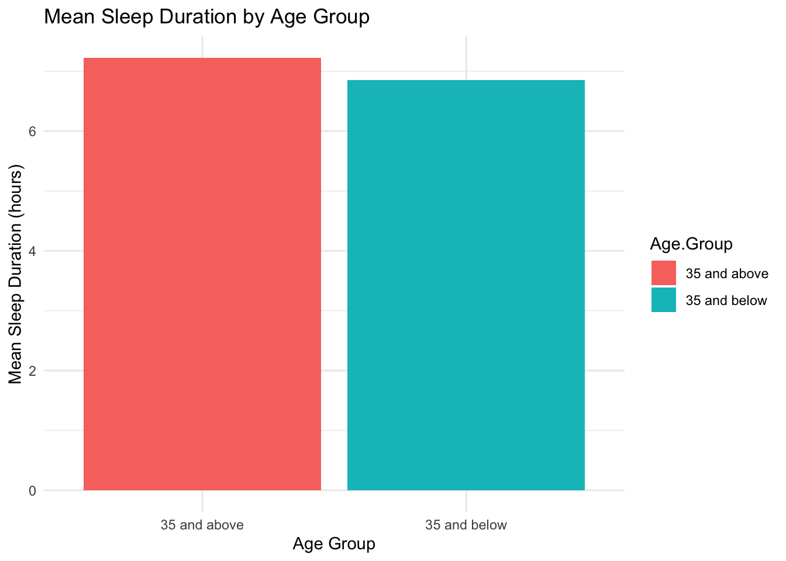
ggplot(age_groups, aes(x = Age.Group, y = Quality.of.Sleep, fill = Age.Group)) +geom_bar(stat ="summary", fun ="mean") +labs(title ="Mean Quality of Sleep by Age Group", x ="Age Group", y ="Mean Quality of Sleep") +theme_minimal()
ggplot(age_groups, aes(x = Age.Group, y = Physical.Activity.Level, fill = Age.Group)) +geom_bar(stat ="summary", fun ="mean") +labs(title ="Mean Physical Activity Level by Age Group", x ="Age Group", y ="Mean Physical Activity Level") +theme_minimal()
ggplot(age_groups, aes(x = Age.Group, y = Stress.Level, fill = Age.Group)) +geom_bar(stat ="summary", fun ="mean") +labs(title ="Mean Stress Level by Age Group", x ="Age Group", y ="Mean Stress Level") +theme_minimal()
# Pair plot of the selected variablesggpairs(data %>%select(Sleep.Duration, Quality.of.Sleep, Physical.Activity.Level, Stress.Level))
ggplot(data, aes(x = Stress.Level)) +geom_density(fill ="lightblue", alpha =0.5) +labs(title ="Density Plot of Stress Level", x ="Stress Level", y ="Density") +theme_minimal()
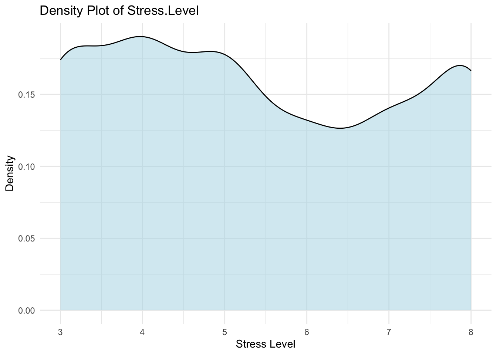
ggplot(data, aes(x = Physical.Activity.Level)) +geom_density(fill ="lightblue", alpha =0.5) +labs(title ="Density Plot of Stress Level", x ="Stress Level", y ="Density") +theme_minimal()
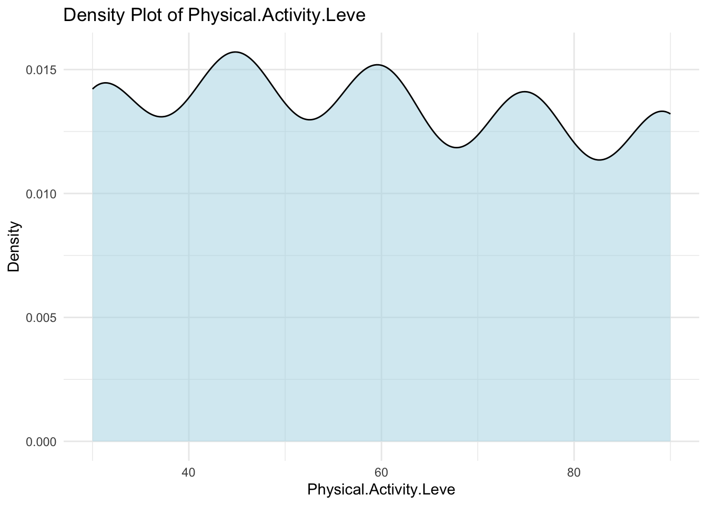
ggplot(data, aes(x = Sleep.Duration)) +geom_density(fill ="lightblue", alpha =0.5) +labs(title ="Density Plot of Stress Level", x ="Stress Level", y ="Density") +theme_minimal()
# Create a box plot for Age distributionage_boxplot <-ggplot(data, aes(x ='', y = Age)) +geom_boxplot() +labs(title ="Age Distribution", y ="Age", x ="") +theme_minimal()# Create a histogram for Age distributionage_histogram <-ggplot(data, aes(x = Age)) +geom_histogram(binwidth =1, fill ="lightblue", color ="black") +labs(title ="Age Distribution", x ="Age", y ="Count") +theme_minimal()# Create a box plot for Quality of Sleep distributionquality_of_sleep_boxplot <-ggplot(data, aes(x ='', y = Quality.of.Sleep)) +geom_boxplot() +labs(title ="Quality of Sleep Distribution", y ="Quality of Sleep", x ="") +theme_minimal()# Create a histogram for Quality of Sleep distributionquality_of_sleep_histogram <-ggplot(data, aes(x = Quality.of.Sleep)) +geom_histogram(binwidth =0.5, fill ="lightblue", color ="black") +labs(title ="Quality of Sleep Distribution", x ="Quality of Sleep", y ="Count") +theme_minimal()# Create a box plot for Physical Activity Level distributionphysical_activity_boxplot <-ggplot(data, aes(x ='', y = Physical.Activity.Level)) +geom_boxplot() +labs(title ="Physical Activity Level Distribution", y ="Physical Activity Level", x ="") +theme_minimal()# Create a histogram for Physical Activity Level distributionphysical_activity_histogram <-ggplot(data, aes(x = Physical.Activity.Level)) +geom_histogram(binwidth =5, fill ="lightblue", color ="black") +labs(title ="Physical Activity Level Distribution", x ="Physical Activity Level", y ="Count") +theme_minimal()# Create a box plot for Stress Level distributionstress_level_boxplot <-ggplot(data, aes(x ='', y = Stress.Level)) +geom_boxplot() +labs(title ="Stress Level Distribution", y ="Stress Level", x ="") +theme_minimal()# Create a histogram for Stress Level distributionstress_level_histogram <-ggplot(data, aes(x = Stress.Level)) +geom_histogram(binwidth =1, fill ="lightblue", color ="black") +labs(title ="Stress Level Distribution", x ="Stress Level", y ="Count") +theme_minimal()# Create a box plot for Heart Rate distributionheart_rate_boxplot <-ggplot(data, aes(x ='', y = Heart.Rate)) +geom_boxplot() +labs(title ="Heart Rate Distribution", y ="Heart Rate", x ="") +theme_minimal()# Create a histogram for Heart Rate distributionheart_rate_histogram <-ggplot(data, aes(x = Heart.Rate)) +geom_histogram(binwidth =1, fill ="lightblue", color ="black") +labs(title ="Heart Rate Distribution", x ="Heart Rate", y ="Count") +theme_minimal()# Create a box plot for Daily Steps distributiondaily_steps_boxplot <-ggplot(data, aes(x ='', y = Daily.Steps)) +geom_boxplot() +labs(title ="Daily Steps Distribution", y ="Daily Steps", x ="") +theme_minimal()# Create a histogram for Daily Steps distributiondaily_steps_histogram <-ggplot(data, aes(x = Daily.Steps)) +geom_histogram(binwidth =500, fill ="lightblue", color ="black") +labs(title ="Daily Steps Distribution", x ="Daily Steps", y ="Count") +theme_minimal()# Combine the plots into a single figurecombined_plots <- (age_boxplot | age_histogram) / (quality_of_sleep_boxplot | quality_of_sleep_histogram) / (physical_activity_boxplot | physical_activity_histogram) / (stress_level_boxplot | stress_level_histogram) / (heart_rate_boxplot | heart_rate_histogram) / (daily_steps_boxplot | daily_steps_histogram) # Define the layout of the combined plotcombined_plot_layout <- combined_plots +plot_layout(ncol =2)# Print the combined plot with the layoutprint(combined_plot_layout)
Age Distribution:
The box plot indicates a fairly uniform age distribution, with a few outliers on the higher end. The histogram verifies this, displaying a fairly consistent distribution across age groups with a little rise in frequency at the middle age range.
Quality of Sleep Distribution:
The box plot shows that most values are concentrated in the center of the scale, implying that the majority of people have intermediate sleep quality, with occasional outliers indicating very good sleep quality. The histogram confirms this, demonstrating that most people report sleep quality in the center of the scale, with fewer reporting extremely high or terrible sleep quality.
Physical Activity Level Distribution:
The box plot for physical activity levels shows a broad range of values, with outliers at both the low and high ends. The histogram has a bimodal distribution, with peaks at both the low and high ends of the activity scale. This might imply that there are two separate groups in the population: one that is less active and one that is more active.
Stress Level Distribution:
According to the box plot, stress levels are typically close to the median, with no extreme outliers. The histogram shows a rather uniform distribution, with a tiny peak at higher stress levels.
Heart Rate Distribution:
The heart rate box plot displays a reasonably compact interquartile range, indicating that the majority of people have a resting heart rate within a restricted range, despite the presence of multiple outliers. The histogram shows a normal distribution with a peak at 70 beats per minute, which is typical for a resting heart rate in adults.
Daily Steps Distribution:
The box plot depicts a wide distribution, reflecting variation in the number of daily steps across individuals, with a few outliers suggesting extremely high step counts. The histogram shows that the majority of people have a daily step count on the low end of the scale, with fewer people reaching higher step counts.
# Calculate mean, median, and modemean_sleep <-mean(data$Quality.of.Sleep, na.rm =TRUE)median_sleep <-median(data$Quality.of.Sleep, na.rm =TRUE)mode_sleep <-as.numeric(names(sort(table(data$Quality.of.Sleep), decreasing =TRUE)[1]))# Create the histogram and add lines for mean, median, and modequality_of_sleep_plot <-ggplot(data, aes(x = Quality.of.Sleep)) +geom_histogram(aes(y = ..count..), binwidth =1, fill ="lightblue", color ="black") +geom_vline(aes(xintercept = mean_sleep, color ="Mean"), linetype ="dashed", linewidth =1) +geom_vline(aes(xintercept = median_sleep, color ="Median"), linetype ="dotted", linewidth =1) +geom_vline(aes(xintercept = mode_sleep, color ="Mode"), linetype ="dotdash", linewidth =1) +scale_color_manual(name ="Statistics", values =c("Mean"="red", "Median"="green", "Mode"="blue")) +labs(title ="Quality of Sleep Distribution", x ="Quality of Sleep", y ="Count") +theme_minimal() +theme(legend.position ="right",plot.title =element_text(hjust =0.5),axis.title.x =element_text(vjust =-0.2),axis.title.y =element_text(vjust =1.2) )# Print the plotprint(quality_of_sleep_plot)
Warning: The dot-dot notation (`..count..`) was deprecated in ggplot2 3.4.0.
ℹ Please use `after_stat(count)` instead.
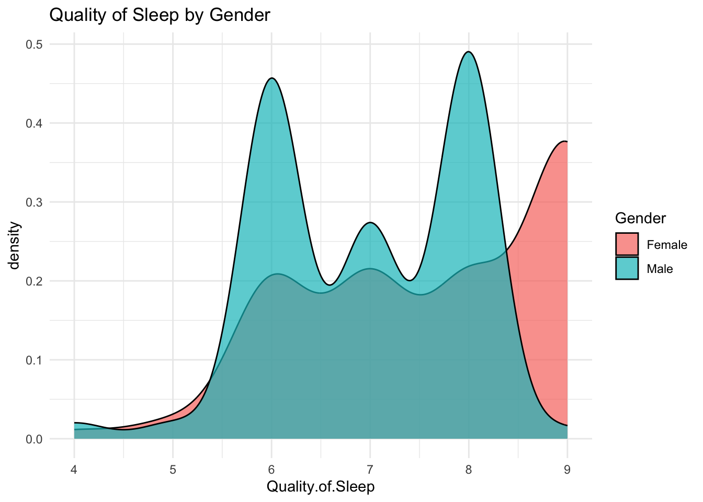
The majority of participants reported excellent quality of sleep (average scores of 7 and 8). The fact that the mode is higher than both the mean and the median indicates that, while some people may have poor sleep quality, this group is more likely to have good sleep.
# Column namesquality_of_sleep_col <-"Quality.of.Sleep"grouping_cols <-c("Gender", "Occupation", "BMI.Category", "Blood.Pressure.Category", "Sleep.Disorder")plots <-list()for(grouping_col in grouping_cols) {# Check if each group has at least two data points valid_groups <- data %>%group_by(!!sym(grouping_col)) %>%filter(n() >1) %>%pull(!!sym(grouping_col)) %>%unique()# Create the density plot only for valid groupsif (length(valid_groups) >0) { p <-ggplot(data %>%filter(!!sym(grouping_col) %in% valid_groups), aes_string(x = quality_of_sleep_col, fill = grouping_col)) +geom_density(alpha =0.7) +theme_minimal() +labs(title =paste("Quality of Sleep by", grouping_col)) plots[[grouping_col]] <- p } else {warning(paste("Not enough data to plot", grouping_col)) }}
Warning: `aes_string()` was deprecated in ggplot2 3.0.0.
ℹ Please use tidy evaluation idioms with `aes()`.
ℹ See also `vignette("ggplot2-in-packages")` for more information.
# Check your list of plotsplots
$Gender
$Occupation
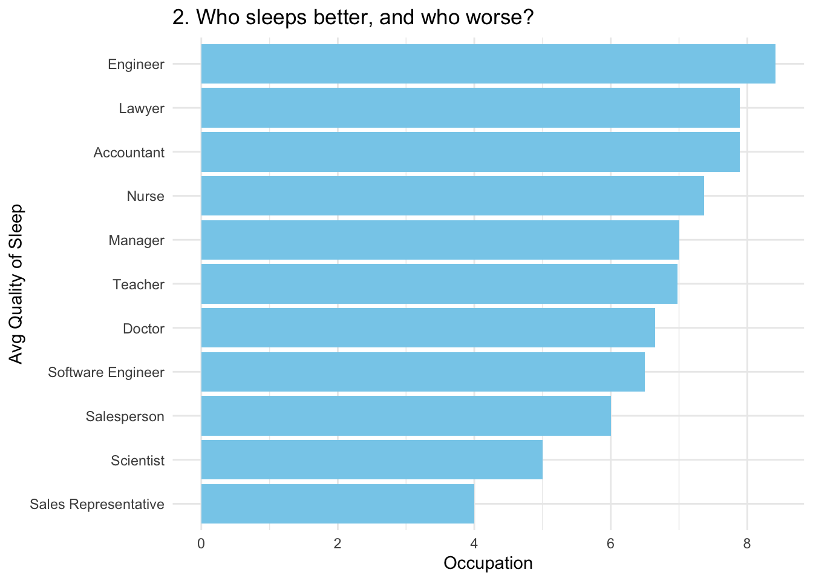
$BMI.Category
$Blood.Pressure.Category
$Sleep.Disorder
# To display the plotsif (length(plots) >0) {library(gridExtra)do.call(grid.arrange, c(plots, ncol =2))}
Attaching package: 'gridExtra'
The following object is masked from 'package:dplyr':
combine
The investigation reveals that there are distinct patterns and variances in sleep quality based on gender, employment, BMI, blood pressure, and the prevalence of sleeping disorders. Lifestyle and health circumstances appear to have a substantial impact on sleep quality.
# Boxplot for Age by Genderage_plot <-ggplot(data, aes(x = Gender, y = Age, fill = Gender)) +geom_boxplot() +labs(title ="1. How old are they?", y ="Age", x ="Gender") +theme_minimal()# Boxplot for Sleep Duration by Gendersleep_duration_plot <-ggplot(data, aes(x = Gender, y =`Sleep.Duration`, fill = Gender)) +geom_boxplot() +labs(title ="2. How long do they sleep?", y ="Sleep.Duration", x ="Gender") +theme_minimal()# Boxplot for Quality of Sleep by Genderquality_sleep_plot <-ggplot(data, aes(x = Gender, y =`Quality.of.Sleep`, fill = Gender)) +geom_boxplot() +labs(title ="3. How well do they sleep?", y ="Quality of Sleep", x ="Gender") +theme_minimal()# Combine the plots into a single plot windowlibrary(gridExtra)grid.arrange(age_plot, sleep_duration_plot, quality_sleep_plot, ncol =3)
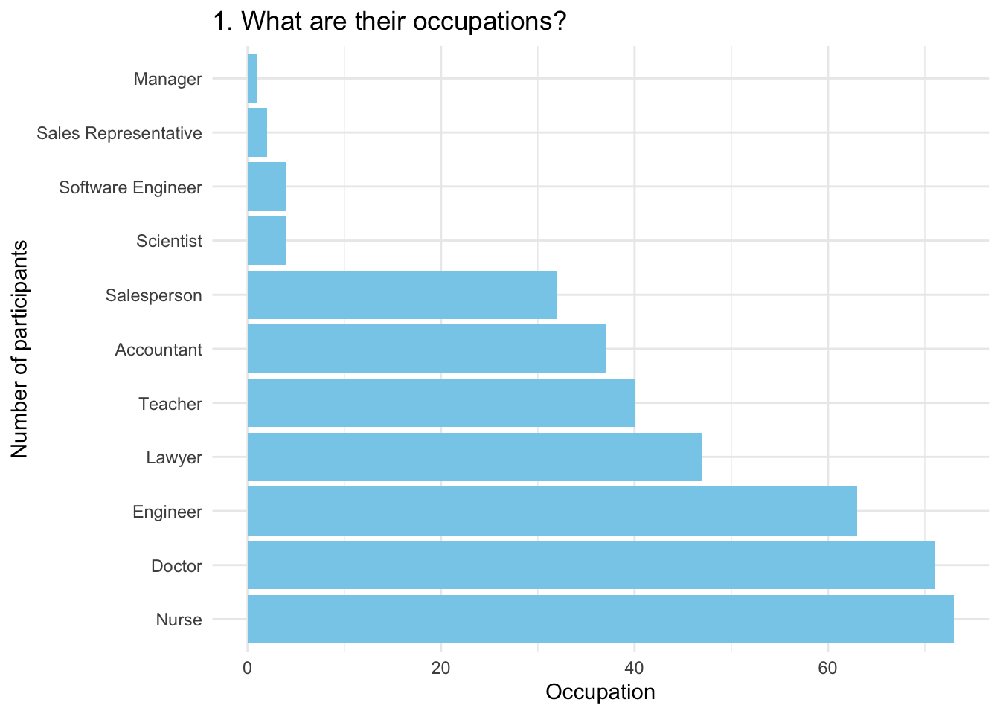
Age:
The age boxplot suggests that, on average, women in this dataset are older than men, as indicated by the higher median line for women in the box. Comparable ranges for the top and bottom of the box and the interquartile range (IQR, the height of the box) point to similar age variability for both genders. There are men and females that are both younger and older than the core age categories, according to the whiskers, which depict the dispersion of the remaining data. However, the range for females is larger, indicating greater ages.
Sleep Duration:
The boxplot illustrates that men have a somewhat shorter median sleep time than women. The identical IQRs for the two genders suggest that the middle 50% of people have similar sleep duration distributions. Males appear to have a significantly larger distribution of sleep time than females, as indicated by the slightly greater range for males.
Quality of Sleep:
The median line suggests that when it comes to sleep quality, women appear to report a little greater median quality of sleep than men. For both genders, the dispersion of values (IQR) is comparable, though. Females tend to have a greater general range than males, suggesting that the quality of their sleep is more variable, with some reporting extremely good and some very low quality.
# Count the number of participants in each occupationoccupation_count <- data %>%group_by(Occupation) %>%summarise(Participants =n_distinct(Person.ID))# Calculate the average quality of sleep for each occupationavg_quality_of_sleep <- data %>%group_by(Occupation) %>%summarise(AvgQualityOfSleep =mean(Quality.of.Sleep, na.rm =TRUE))# Number of Participants by Occupationoccupation_count_plot <-ggplot(occupation_count, aes(x =reorder(Occupation, -Participants), y = Participants)) +geom_bar(stat ="identity", fill ="skyblue") +coord_flip() +labs(title ="1. What are their occupations?", x ="Number of participants", y ="Occupation") +theme_minimal()# Average Quality of Sleep by Occupationquality_sleep_plot <-ggplot(avg_quality_of_sleep, aes(x =reorder(Occupation, AvgQualityOfSleep), y = AvgQualityOfSleep)) +geom_bar(stat ="identity", fill ="skyblue") +coord_flip() +labs(title ="2. Who sleeps better, and who worse?", x ="Avg Quality of Sleep", y ="Occupation") +theme_minimal()# Print the plotsprint(occupation_count_plot)
print(quality_sleep_plot)
Occupational Distribution:
The distribution of participants among different vocations is seen in the first chart. The most common occupation is nursing, which is followed by engineering and medicine. In the sample, managers and sales reps are the least represented. This distribution may represent the true demographic composition of the pool from which participants were selected, or it may show the interest or availability of various occupations in taking part in the study.
Average Quality of Sleep by Occupation:
The second graph displays the average sleep quality for various professions. Engineers seem to have the greatest average sleep quality, followed by accountants and attorneys. Conversely, scientists and sales people report the lowest average quality of sleep, which might be attributed to issues relating to their line of work or greater levels of stress related to their jobs. Despite the important importance of their work, doctors do not necessarily get better sleep than other professions, as seen by the fact that, despite their large representation in the dataset, their average sleep quality does not top the list.
# Count of participants by Sleep Disordersleep_disorder_count <-ggplot(data, aes(x = Sleep.Disorder)) +geom_bar(fill ="skyblue") +labs(title ="1. How many suffer from Sleep Disorders?", x ="Sleep Disorder", y ="Number of Participants") +theme_minimal()# Average Quality of Sleep by Sleep Disorderavg_sleep_quality_by_disorder <-ggplot(data, aes(x = Sleep.Disorder, y = Quality.of.Sleep)) +geom_bar(stat ="summary", fun ="mean", fill ="skyblue") +labs(title ="2. Who sleeps better?", x ="Sleep Disorder", y ="Avg Sleep Quality") +theme_minimal()# Sleep quality boxplot by Sleep Disordersleep_quality_boxplot <-ggplot(data, aes(x = Sleep.Disorder, y = Quality.of.Sleep)) +geom_boxplot(fill ="skyblue") +labs(title ="3. Sleep quality boxplot by Sleep Disorders", x ="Sleep.Disorder", y ="Sleep.Quality") +theme_minimal()# Print the plotsprint(sleep_disorder_count)
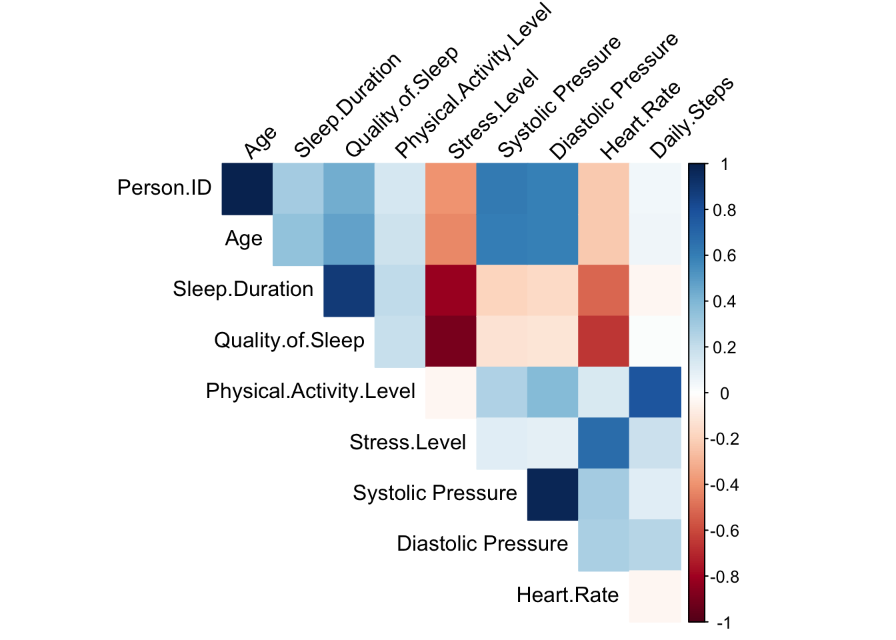
print(avg_sleep_quality_by_disorder)
print(sleep_quality_boxplot)
Prevalence of Sleep Disorders:
The bar graph displays the number of individuals with various sleep problems. The majority of individuals do not appear to have a sleep issue, with insomnia being the most common and sleep apnea being the least prevalent.
Average Sleep Quality by Sleep Disorder:
This bar graph shows that persons without a sleep issue had the highest average sleep quality score, indicating higher overall sleep quality. Individuals with insomnia and sleep apnea have lower scores, indicating worse sleep quality, which is consistent with the nature of these diseases.
Sleep Quality Distribution by Sleep Disorder:
The boxplot depicts the distribution of sleep quality across each sleep disorder category. Individuals without a sleep issue had the greatest median sleep quality. Participants with insomnia have the lowest median sleep quality and a larger interquartile range (IQR), indicating greater variability in their sleep quality. The ‘Sleep Apnea’ group has a greater median sleep quality than the ‘Insomnia’ group, but it also has a wide IQR, indicating variability among persons with this disease.
# BMI Data Plotting# Count the number of participants in each BMI categorybmi_counts <- data %>%group_by(BMI.Category) %>%summarise(Number.of.Participants =n())# Calculate the average quality of sleep for each BMI categorybmi_quality <- data %>%group_by(BMI.Category) %>%summarise(Avg.Quality.of.Sleep =mean(Quality.of.Sleep, na.rm =TRUE))# Bar plot for BMI category participant countbmi_count_plot <-ggplot(bmi_counts, aes(x = BMI.Category, y = Number.of.Participants, fill = BMI.Category)) +geom_bar(stat ="identity") +labs(title ="1. What is your BMI category?", x ="BMI Category", y ="Number of participants") +theme_minimal()# Bar plot for average quality of sleep by BMI categorybmi_quality_plot <-ggplot(bmi_quality, aes(x = BMI.Category, y = Avg.Quality.of.Sleep, fill = BMI.Category)) +geom_bar(stat ="identity") +labs(title ="2. Who sleeps better?", x ="BMI Category", y ="Avg Quality of Sleep") +theme_minimal()# Boxplot for quality of sleep by BMI categorybmi_quality_boxplot <-ggplot(data, aes(x = BMI.Category, y = Quality.of.Sleep, fill = BMI.Category)) +geom_boxplot() +labs(title ="3. Sleep quality boxplot by BMI Category", x ="BMI Category", y ="Quality of Sleep") +theme_minimal()# Display the plotsbmi_count_plot
bmi_quality_plot
bmi_quality_boxplot
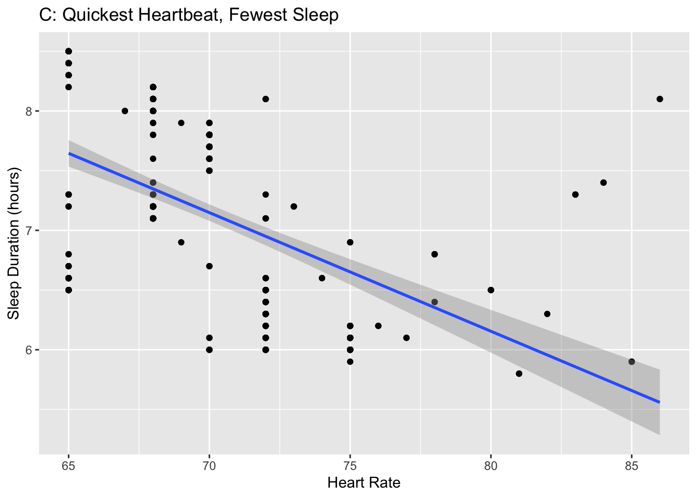
BMI Category Distribution:
The first graphic is a bar graph that depicts the distribution of participants across various BMI groups. The bulk of the participants had a ‘Normal’ BMI, with a much lower proportion in the ‘Overweight’ group and very few in the ‘Obese’ category.
Average Quality of Sleep by BMI Category:
The second figure depicts the average sleep quality for each BMI group, as measured on a scale (not stated, but likely 1 to 10 or comparable). persons with a ‘Normal’ BMI report the best average quality of sleep, followed by ‘Overweight’ persons, who report somewhat less, and ‘Obese’ individuals, who report the lowest average quality of sleep. However, the differences across the groups appear to be small.
Sleep Quality Boxplot by BMI Category:
The final graphic is a boxplot that shows a more comprehensive distribution of sleep quality ratings within each BMI group. The ‘Normal’ BMI group has the greatest median sleep quality but also includes an outlier with a very poor sleep quality score. The ‘Obese’ category has a broad interquartile range, indicating that sleep quality varies more among people in this group. The ‘Overweight’ category has a median sleep quality that is lower than the ‘Normal’ but higher than the ‘Obese’ category, and its interquartile range is shorter than in the ‘Obese’ group, indicating greater consistency in sleep quality among ‘Overweight’ individuals.
# Blood Pressure Data Plotting# Repeat the same process for blood pressure databp_counts <- data %>%group_by(Blood.Pressure.Category) %>%summarise(Number.of.Participants =n())bp_quality <- data %>%group_by(Blood.Pressure.Category) %>%summarise(Avg.Quality.of.Sleep =mean(Quality.of.Sleep, na.rm =TRUE))bp_count_plot <-ggplot(bp_counts, aes(x = Blood.Pressure.Category, y = Number.of.Participants, fill = Blood.Pressure.Category)) +geom_bar(stat ="identity") +labs(title ="1. How is your Blood Pressure level?", x ="Blood Pressure Category", y ="Number of participants") +theme_minimal()bp_quality_plot <-ggplot(bp_quality, aes(x = Blood.Pressure.Category, y = Avg.Quality.of.Sleep, fill = Blood.Pressure.Category)) +geom_bar(stat ="identity") +labs(title ="2. Who sleeps better?", x ="Blood Pressure Category", y ="Avg Quality of Sleep") +theme_minimal()bp_quality_boxplot <-ggplot(data, aes(x = Blood.Pressure.Category, y = Quality.of.Sleep, fill = Blood.Pressure.Category)) +geom_boxplot() +labs(title ="3. Sleep Quality boxplot by Blood Pressure Category", x ="Blood Pressure Category", y ="Quality of Sleep") +theme_minimal()# Display the plotbp_count_plot
bp_quality_plot
bp_quality_boxplot
Blood Pressure Level Distribution:
The bar chart depicts the distribution of blood pressure categories among the participants. The biggest group is those with normal blood pressure, followed by those with hypertension, and the smallest group is made up of people with ideal blood pressure. This shows that the majority of people have normal blood pressure.
Average Sleep Quality by Blood Pressure Category:
The bar chart that compares the average sleep quality of the same blood pressure groups. Interestingly, individuals with ideal blood pressure had the best average sleep quality, followed by those with normal blood pressure, and those with hypertension have the lowest average sleep quality. This suggests a possible link between reduced blood pressure and improved sleep quality.
Sleep Quality Boxplot by Blood Pressure Category:
The boxplot that shows how sleep quality varies across each blood pressure group. The boxplot for hypertension exhibits a broader range and higher median sleep quality scores than the boxplot for normal blood pressure, which is more compacted and has a little lower median. The ideal blood pressure group had a higher median than the other two, but a few outliers suggest that some people with perfect blood pressure nevertheless report poor sleep quality. This graph illustrates that, while people with ideal blood pressure had superior average sleep quality, there is variation within each category.
# Select only the numeric columns from the datanumeric_data <- data[sapply(data, is.numeric)]# Calculating the correlation matrixcor_matrix <-cor(numeric_data, use ="complete.obs")# Create the correlation heatmapcorrplot(cor_matrix, method ="color", type ="upper", tl.col ="black", tl.srt =45,diag =FALSE)
The scale on the right represents the range of correlation coefficients from -1 to 1.
A coefficient near to 1 indicates a significant positive correlation, which means that when one variable grows, so does the other.
A coefficient around -1 indicates a significant negative correlation, implying that when one variable grows, the other tends to decrease.
A coefficient around zero indicates little or no linear association between the variables.
Thus, “Age” and “Person.ID” exhibit a substantial negative connection, which is uncommon and may imply that “Person.ID” is quantitatively linked to age. However, an ID should not have any association with age unless it is arbitrarily assigned based on age. “Quality of Sleep” and “Physical Activity Level” show a significant positive link, implying that persons who engage in more physical exercise may have better sleep quality. “Stress Level” appears to have a modest positive connection with “Systolic Pressure” and “Diastolic Pressure,” showing that more stress may be connected with greater blood pressure. “Daily Steps” has a substantial negative association with “Heart Rate,” implying that those who take more daily steps may have a lower resting heart rate, which is an indication of excellent cardiovascular health.
# Scatter plot of Sleep Duration vs Quality of Sleepplot1 <-ggplot(data, aes(x = Quality.of.Sleep, y = Sleep.Duration)) +geom_point() +geom_smooth(method = lm, se =TRUE) +labs(title ="Long Rest = Good Rest",x ="Quality of Sleep",y ="Sleep Duration (hours)")# Scatter plot of Stress Level vs Quality of Sleepplot2 <-ggplot(data, aes(x = Quality.of.Sleep, y = Stress.Level)) +geom_point() +geom_smooth(method = lm, se =TRUE) +labs(title ="More Stress = Bad Rest",x ="Quality of Sleep",y ="Stress Level")#Show the plotsplot1
`geom_smooth()` using formula = 'y ~ x'
plot2
`geom_smooth()` using formula = 'y ~ x'
Long Rest = Good Rest:
The first figure demonstrates a favorable relationship between sleep length and sleep quality. Sleep duration increases as sleep quality scores rise, implying that those who report higher sleep quality sleep for longer periods of time. The data points are densely packed around the trend line, particularly when sleep quality improves, demonstrating a significant correlation between these two factors.
More Stress = Bad Rest:
The second figure demonstrates a negative link between stress and sleep quality. As stress levels rise, the quality of sleep declines, implying that increased stress is linked to decreased sleep quality. The trend line slopes lower across the plot, and the data points, albeit slightly dispersed, follow the downward trend, confirming the negative link between stress and sleep quality.
# Scatter plot of Physical Activity Level vs Sleep Qualityplot3 <-ggplot(data, aes(x = Quality.of.Sleep, y = Physical.Activity.Level)) +geom_point() +geom_smooth(method = lm, se =TRUE) +labs(title ="A: Sleep quality based on physical activity",x ="Sleep Quality",y ="Physical Activity Level (minutes)")# Scatter plot of Age vs Sleep Durationplot4 <-ggplot(data, aes(x = Age, y = Sleep.Duration)) +geom_point() +geom_smooth(method = lm, se =TRUE) +labs(title ="B: The older you get, the more you sleep",x ="Age",y ="Sleep Duration (hours)")# Scatter plot of Heart Rate vs Sleep Durationplot5 <-ggplot(data, aes(x = Heart.Rate, y = Sleep.Duration)) +geom_point() +geom_smooth(method = lm, se =TRUE) +labs(title ="C: Quickest Heartbeat, Fewest Sleep",x ="Heart Rate",y ="Sleep Duration (hours)")# Scatter plot of Physical Activity vs Sleep Durationplot6 <-ggplot(data, aes(x = Physical.Activity.Level, y = Sleep.Duration)) +geom_point() +geom_smooth(method = lm, se =TRUE) +labs(title ="D: Engaging in physical exercise can facilitate sleep",x ="Physical Activity",y ="Sleep Duration (hours)")#Show the plotsplot3
`geom_smooth()` using formula = 'y ~ x'
plot4
`geom_smooth()` using formula = 'y ~ x'
plot5
`geom_smooth()` using formula = 'y ~ x'
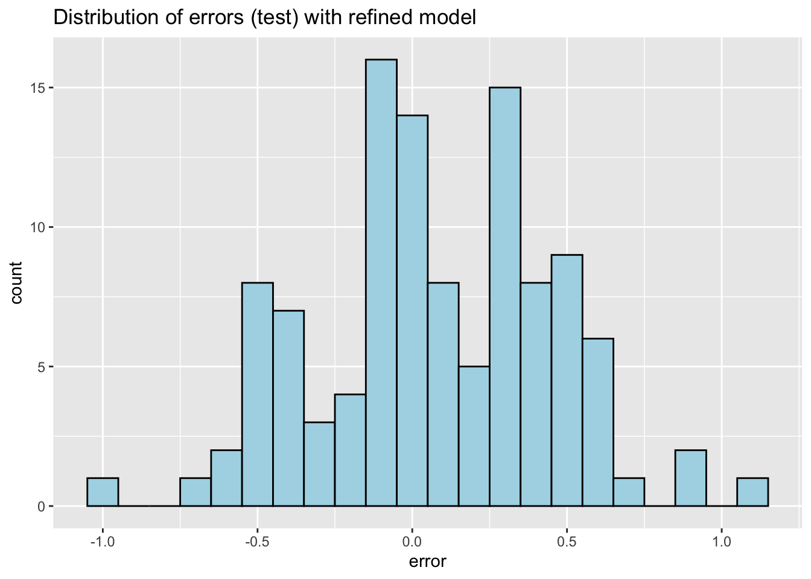
plot6
`geom_smooth()` using formula = 'y ~ x'
Sleep Quality Based on Physical Activity:
There appears to be a favorable relationship between physical exercise (in minutes) and sleep quality. The sleep quality score improves with increased physical activity. The shaded region reflects the confidence interval, which indicates some uncertainty around the trend line but overall suggests that more physical activity is connected with higher sleep quality.
Sleep Duration and Age:
The graph shows a positive link between age and sleep length (in hours). Sleep duration rises with age, suggesting that older people sleep more rather than less. However, the distribution of data points indicates that there is significant variability and that other factors may possibly play a role.
Sleep Duration and Heart Rate:
This graph indicates a negative association between heart rate and sleep duration. It suggests that a greater resting heart rate leads to shorter sleep lengths. The trend line falls as the heart rate rises, corroborating this theory.
Sleep Duration and Physical Activity:
This plot demonstrates a beneficial relationship between physical activity and sleep length. As physical activity increases, so does sleep length, supporting the title’s claim that physical exercise can help you sleep longer.
# Scatter plot of Heartbeat vs Stress Lvevelplot7 <-ggplot(data, aes(x = Heart.Rate, y = Stress.Level)) +geom_point() +geom_smooth(method = lm, se =TRUE) +labs(title ="A: Increased stress leads to quicker heartbeats",x ="Heartbeat",y ="Stress Level")# Scatter plot of Heartbeat vs Quality of Sleepplot8 <-ggplot(data, aes(x = Heart.Rate, y = Quality.of.Sleep)) +geom_point() +geom_smooth(method = lm, se =TRUE) +labs(title ="B: Faster pulse, worse quality of sleep",x ="Heartbeat",y ="Quality of Sleep")#Show the plotsplot7
`geom_smooth()` using formula = 'y ~ x'
plot8
`geom_smooth()` using formula = 'y ~ x'
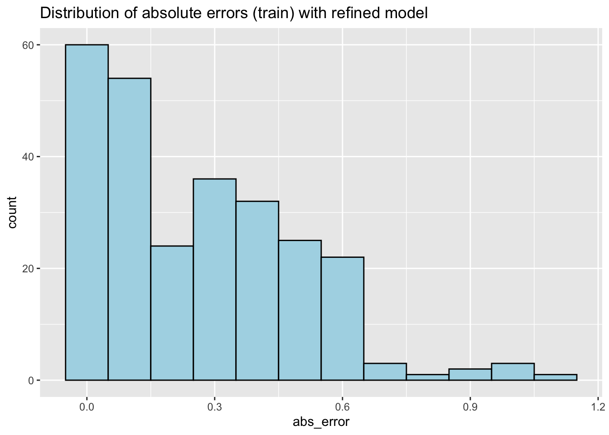
Increased stress leads to quicker heartbeats:
This scatter plot with a regression line demonstrates a positive link between heart rate and stress level. As the heart rate increases, so does the stress level. The shaded region surrounding the regression line represents the prediction’s confidence interval, indicating that while there is some uncertainty in the connection, the overall trend is positive.
Faster pulse, worse quality of sleep:
This scatter figure, which includes a regression line, shows a negative link between heart rate and sleep quality. As the heart rate rises, the quality of sleep appears to deteriorate. The confidence interval is likewise shaded, indicating variability while maintaining an overall decreasing trend.
# Scatter plot of Physical Activity based on Sleep Qualityplot9 <-ggplot(data, aes(x = Physical.Activity.Level, y = Quality.of.Sleep)) +geom_point() +geom_smooth(method = lm, se =TRUE) +labs(title ="A: Physical Activity based on Sleep Quality",x ="Physical Activity",y ="Sleep Quality")# Scatter plot of Sleep Duration based on Sleep Qualityplot10 <-ggplot(data, aes(x = Sleep.Duration, y = Quality.of.Sleep)) +geom_point() +geom_smooth(method = lm, se =TRUE) +labs(title ="B: Sleep Duration based on Sleep Quality",x ="Sleep Duration",y ="Quality of Sleep")#Show the plotsplot9
`geom_smooth()` using formula = 'y ~ x'
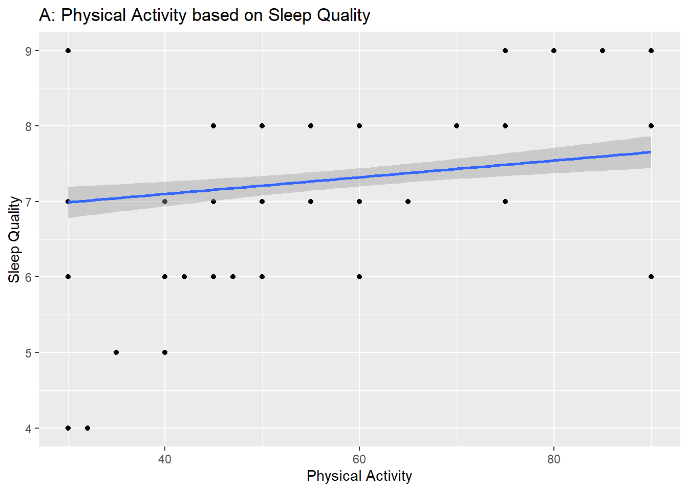
plot10
`geom_smooth()` using formula = 'y ~ x'
Sleep Quality based on Physical Activity:
This scatter plot demonstrates a favorable correlation between physical exercise and sleep quality. As physical activity levels rise, sleep quality appears to improve lightly.
Sleep Quality based on Heartbeat:
This graph illustrates a positive correlation between sleep duration and sleep quality.
# Scatter plot of Stress Level based on Physical Activityplot11 <-ggplot(data, aes(x = Physical.Activity.Level , y = Stress.Level)) +geom_point() +geom_smooth(method = lm, se =TRUE) +labs(title ="Physical Activity Level based on Stress Level",x ="Physical Activity Level",y ="Stress Level")#Show the plotplot11
`geom_smooth()` using formula = 'y ~ x'
Stress Level based on Physical Activity:
This scatter plot depicts the association between physical activity (x-axis) and stress level (y-axis).
# Scatter plot of Sleep Duration vs Age with BMI categoriesp1 <-ggplot(data, aes(x = Age, y = Sleep.Duration, color = BMI.Category)) +geom_point() +ggtitle("Sleep Duration vs Age with BMI categories") +theme_minimal()ggMarginal(p1, type ="histogram")
# Scatter plot of Quality of Sleep vs Age with BMI categoriesp2 <-ggplot(data, aes(x = Age, y = Quality.of.Sleep, color = BMI.Category)) +geom_point() +ggtitle("Quality of Sleep vs Age with BMI categories") +theme_minimal()ggMarginal(p2, type ="histogram")
# Scatter plot of Quality of Sleep vs HeartRate with Sleep Disorder categoriesp3 <-ggplot(data, aes(x = Heart.Rate, y = Quality.of.Sleep, color = Sleep.Disorder)) +geom_point() +ggtitle("Quality of Sleep vs Heart Rate with Sleep Disorder") +theme_minimal()ggMarginal(p3, type ="histogram")
# Scatter plot of Quality of Sleep vs Stress Level with Sleep Disorder categoriesp4 <-ggplot(data, aes(x = Stress.Level, y = Quality.of.Sleep, color = Sleep.Disorder)) +geom_point() +ggtitle("Sleep vs Stress Level with Sleep Disorder") +theme_minimal()ggMarginal(p4, type ="histogram")
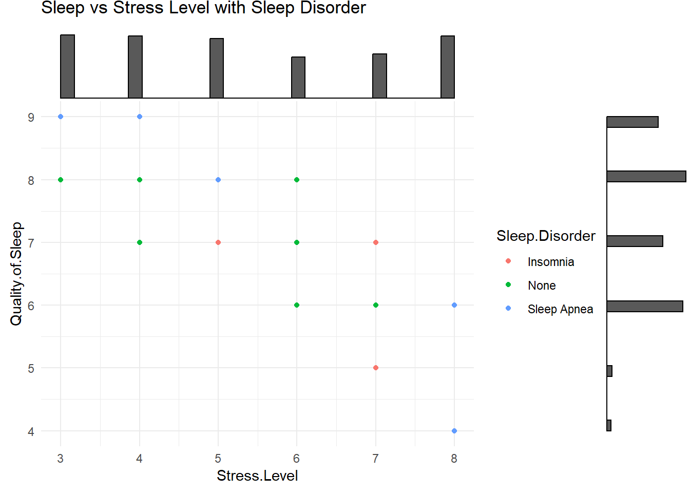
# Scatter plot of Quality of Sleep vs Blood Preassurep5 <-ggplot(data, aes(x = Heart.Rate, y = Quality.of.Sleep, color = Blood.Pressure.Category)) +geom_point() +ggtitle("Heartbeat vs Blood Pressure") +theme_minimal()ggMarginal(p5, type ="histogram")
Machine Learning
Linear Regression
# Response and predictor variablesy <- data$Quality.of.SleepX <- data %>%select(Sleep.Duration, Age, Physical.Activity.Level, Stress.Level, Heart.Rate, Daily.Steps)# Add a constant column for the interceptX <-cbind(Intercept =1, X)# Split the data into training and testing sets (70% train, 30% test)set.seed(42) # For reproducibilitysplit <-sample.split(y, SplitRatio =0.7)X_train <-subset(X, split ==TRUE)X_test <-subset(X, split ==FALSE)y_train <-subset(y, split ==TRUE)y_test <-subset(y, split ==FALSE)# Fit the OLS model to the training datamodel <-lm(y_train ~ ., data =as.data.frame(X_train))summary(model)
Call:
lm(formula = y_train ~ ., data = as.data.frame(X_train))
Residuals:
Min 1Q Median 3Q Max
-1.0422 -0.2033 0.0057 0.2423 1.1027
Coefficients: (1 not defined because of singularities)
Estimate Std. Error t value Pr(>|t|)
(Intercept) 5.332e+00 8.071e-01 6.606 2.27e-10 ***
Intercept NA NA NA NA
Sleep.Duration 6.730e-01 4.888e-02 13.768 < 2e-16 ***
Age 1.532e-02 2.848e-03 5.378 1.70e-07 ***
Physical.Activity.Level -4.056e-05 2.352e-03 -0.017 0.986257
Stress.Level -2.945e-01 2.979e-02 -9.886 < 2e-16 ***
Heart.Rate -3.586e-02 1.013e-02 -3.540 0.000476 ***
Daily.Steps 9.029e-05 3.063e-05 2.947 0.003500 **
---
Signif. codes: 0 '***' 0.001 '**' 0.01 '*' 0.05 '.' 0.1 ' ' 1
Residual standard error: 0.3555 on 256 degrees of freedom
Multiple R-squared: 0.9152, Adjusted R-squared: 0.9133
F-statistic: 460.8 on 6 and 256 DF, p-value: < 2.2e-16
Interpretation of Model Summary:
Output indicates that the predictors Sleep Duration, Age, Stress Level, Heart Rate, and Daily Steps are significant, while Physical Activity Level is not. The model’s high R-squared (0.9152) and Adjusted R-squared (0.9133) values indicate a strong fit.
# Remove Physical Activity Level from the predictorsX <- data %>%select(Age, Sleep.Duration, Stress.Level, Heart.Rate, Daily.Steps)X <-cbind(Intercept =1, X)# Split the data into training and testing sets (70% train, 30% test)set.seed(42) # For reproducibilitysplit <-sample.split(y, SplitRatio =0.7)X_train <-subset(X, split ==TRUE)X_test <-subset(X, split ==FALSE)y_train <-subset(y, split ==TRUE)y_test <-subset(y, split ==FALSE)# Fit the new OLS model to the training datamodel_refined <-lm(y_train ~ ., data =as.data.frame(X_train))summary(model_refined)
Call:
lm(formula = y_train ~ ., data = as.data.frame(X_train))
Residuals:
Min 1Q Median 3Q Max
-1.04221 -0.20251 0.00561 0.24238 1.10248
Coefficients: (1 not defined because of singularities)
Estimate Std. Error t value Pr(>|t|)
(Intercept) 5.341e+00 6.203e-01 8.609 7.48e-16 ***
Intercept NA NA NA NA
Age 1.531e-02 2.840e-03 5.393 1.57e-07 ***
Sleep.Duration 6.728e-01 4.680e-02 14.375 < 2e-16 ***
Stress.Level -2.943e-01 2.798e-02 -10.519 < 2e-16 ***
Heart.Rate -3.596e-02 8.131e-03 -4.423 1.44e-05 ***
Daily.Steps 8.983e-05 1.493e-05 6.015 6.15e-09 ***
---
Signif. codes: 0 '***' 0.001 '**' 0.01 '*' 0.05 '.' 0.1 ' ' 1
Residual standard error: 0.3548 on 257 degrees of freedom
Multiple R-squared: 0.9152, Adjusted R-squared: 0.9136
F-statistic: 555.1 on 5 and 257 DF, p-value: < 2.2e-16
# Define MAE functionmae <-function(y, pred) {return(round(mean(abs(y - pred)), 2))}# Predictions on training data with refined modelpred_train_refined <-predict(model_refined, newdata =as.data.frame(X_train))# MAE for training data with refined modelnaive_mae_train <-mae(y_train, mean(y_train))model_mae_train_refined <-mae(y_train, pred_train_refined)print(paste('Naïve Training MAE:', naive_mae_train))
[1] "Naïve Training MAE: 1.05"
print(paste('Training MAE with refined model:', model_mae_train_refined))
[1] "Training MAE with refined model: 0.27"
# Plotting distribution of errors for refined modelggplot(data.frame(error = y_train - pred_train_refined), aes(x = error)) +geom_histogram(binwidth =0.1, fill ='blue', color ='black') +ggtitle("Distribution of errors (train) with refined model")
ggplot(data.frame(abs_error =abs(y_train - pred_train_refined)), aes(x = abs_error)) +geom_histogram(binwidth =0.1, fill ='blue', color ='black') +ggtitle("Distribution of absolute errors (train) with refined model")
# Predictions on test data with refined modelpred_test_refined <-predict(model_refined, newdata =as.data.frame(X_test))# MAE for test data with refined modelnaive_mae_test <-mae(y_test, mean(y_test))model_mae_test_refined <-mae(y_test, pred_test_refined)print(paste('Naïve Testing MAE:', naive_mae_test))
[1] "Naïve Testing MAE: 1.03"
print(paste('Testing MAE with refined model:', model_mae_test_refined))
[1] "Testing MAE with refined model: 0.31"
# Plotting distribution of errors for refined modelggplot(data.frame(error = y_test - pred_test_refined), aes(x = error)) +geom_histogram(binwidth =0.1, fill ='blue', color ='black') +ggtitle("Distribution of errors (test) with refined model")
ggplot(data.frame(abs_error =abs(y_test - pred_test_refined)), aes(x = abs_error)) +geom_histogram(binwidth =0.1, fill ='blue', color ='black') +ggtitle("Distribution of absolute errors (test) with refined model")
Improved Model :
By removing an insignificant predictor (Physical.Activity.Level), multicollinearity issues are likely reduced, resulting in more reliable estimates of the coefficients. The refined model maintains a high R-squared (0.9152) and Adjusted R-squared (0.9136), indicating that the model still explains a significant portion of the variance in the response variable. The F-statistic is very high and significant, suggesting that the overall model is a good fit.
Mean Absolute Error :
The Training MAE for the refined model (0.27) is much lower than the Naïve Training MAE (1.05), indicating that the model fits the training data well. The Testing MAE for the refined model (0.31) is also lower than the Naïve Testing MAE (1.03), showing good predictive performance on the test data. The similarity between Training MAE (0.27) and Testing MAE (0.31) suggests that the model does not overfit the training data and generalizes well to unseen data. .
Gradient Boosting Machine In this part of the project, we implemented a Gradient Boosting Machine (GBM) model to predict the quality of sleep based on various factors such as sleep duration, age, physical activity level, stress level, heart rate, and daily steps. We began by defining a grid of hyperparameters to tune the model, including the number of trees, interaction depth, shrinkage (learning rate), and minimum observations in the terminal nodes. We set up a 5-fold cross-validation to robustly evaluate the model’s performance and prevent overfitting. The data was split into training (70%) and testing (30%) sets, and the GBM model was trained using the defined hyperparameters and cross-validation settings.
# Splitting the data into training (70%) and testing (30%) setsset.seed(455) trainIndex <-createDataPartition(data$`Quality.of.Sleep`, p =0.7, list =FALSE)trainData <- data[trainIndex, ]testData <- data[-trainIndex, ]
# Defining the hyperparameter gridgrid <-expand.grid(n.trees =c(25, 50, 100, 150), # Number of treesinteraction.depth =c(1, 2), # Depth of each treeshrinkage =c(0.05, 0.1, 0.15), # Learning raten.minobsinnode =c(5, 10) # Minimum number of observations in the terminal nodes)# Setting up the training control with 5-fold cross-validationtrain_control <-trainControl(method ="cv", number =5)
# Training the model using the grid searchset.seed(455) # For reproducibilitygbm_tuned <-train(`Quality.of.Sleep`~`Sleep.Duration`+ Age +`Physical.Activity.Level`+`Stress.Level`+`Heart.Rate`+`Daily.Steps`,data = trainData,method ="gbm",trControl = train_control,tuneGrid = grid,verbose =FALSE)
# Predictions on training data with gbm_tuned modelpred_train_gbm_tuned <-predict(gbm_tuned, newdata = trainData)mae <-function(y, pred) {return(round(mean(abs(y - pred)), 2))}# MAE for training data with gbm_tuned modelnaive_mae_train <-mae(trainData$`Quality.of.Sleep`, mean(trainData$`Quality.of.Sleep`))model_mae_train_gbm_tuned <-mae(trainData$`Quality.of.Sleep`, pred_train_gbm_tuned)print(paste('Naive Training MAE:', naive_mae_train))
[1] "Naive Training MAE: 1.03"
print(paste('Training MAE with gbm_tuned model:', model_mae_train_gbm_tuned))
[1] "Training MAE with gbm_tuned model: 0.08"
# Plotting distribution of errors for gbm_tuned model on training dataggplot(data.frame(error = trainData$`Quality.of.Sleep`- pred_train_gbm_tuned), aes(x = error)) +geom_histogram(binwidth =0.1, fill ='blue', color ='black') +ggtitle("Distribution of errors (train) with gbm_tuned model")
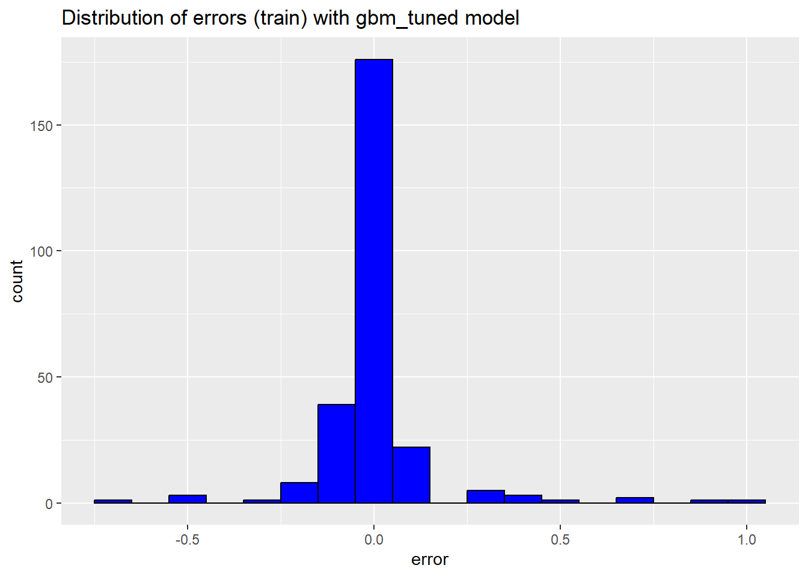
ggplot(data.frame(abs_error =abs(trainData$`Quality.of.Sleep`- pred_train_gbm_tuned)), aes(x = abs_error)) +geom_histogram(binwidth =0.1, fill ='blue', color ='black') +ggtitle("Distribution of absolute errors (train) with gbm_tuned model")
# Predictions on test data with gbm_tuned modelpred_test_gbm_tuned <-predict(gbm_tuned, newdata = testData)# MAE for test data with gbm_tuned modelnaive_mae_test <-mae(testData$`Quality.of.Sleep`, mean(testData$`Quality.of.Sleep`))model_mae_test_gbm_tuned <-mae(testData$`Quality.of.Sleep`, pred_test_gbm_tuned)print(paste('Naive Testing MAE:', naive_mae_test))
[1] "Naive Testing MAE: 1.08"
print(paste('Testing MAE with gbm_tuned model:', model_mae_test_gbm_tuned))
[1] "Testing MAE with gbm_tuned model: 0.11"
# Plotting distribution of errors for gbm_tuned model on test dataggplot(data.frame(error = testData$`Quality.of.Sleep`- pred_test_gbm_tuned), aes(x = error)) +geom_histogram(binwidth =0.1, fill ='blue', color ='black') +ggtitle("Distribution of errors (test) with gbm_tuned model")
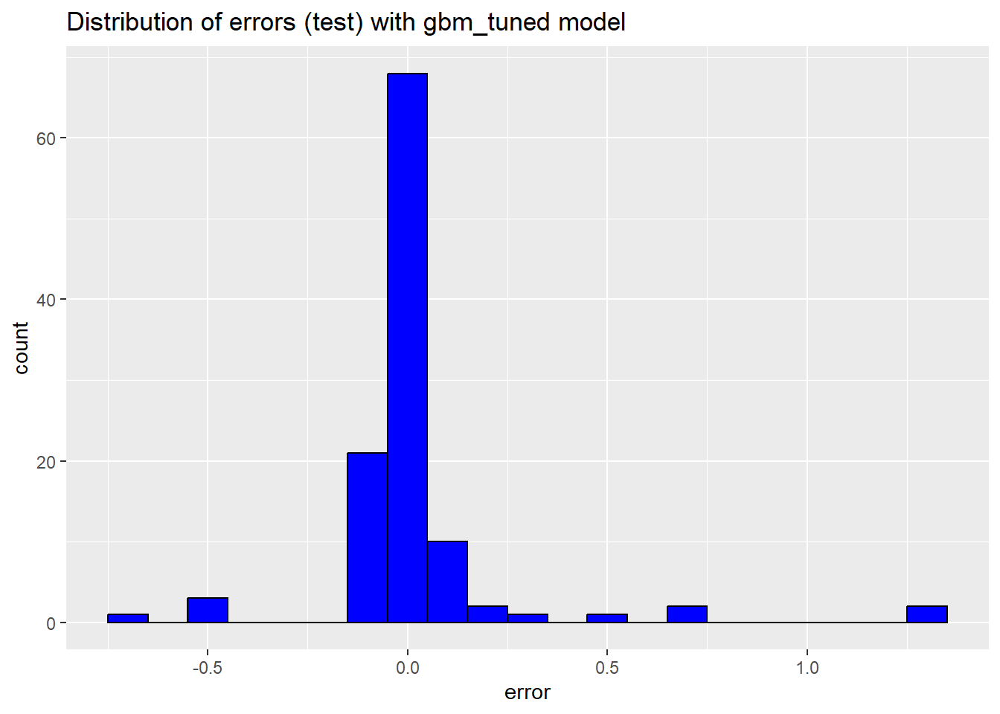
ggplot(data.frame(abs_error =abs(testData$`Quality.of.Sleep`- pred_test_gbm_tuned)), aes(x = abs_error)) +geom_histogram(binwidth =0.1, fill ='blue', color ='black') +ggtitle("Distribution of absolute errors (test) with gbm_tuned model")
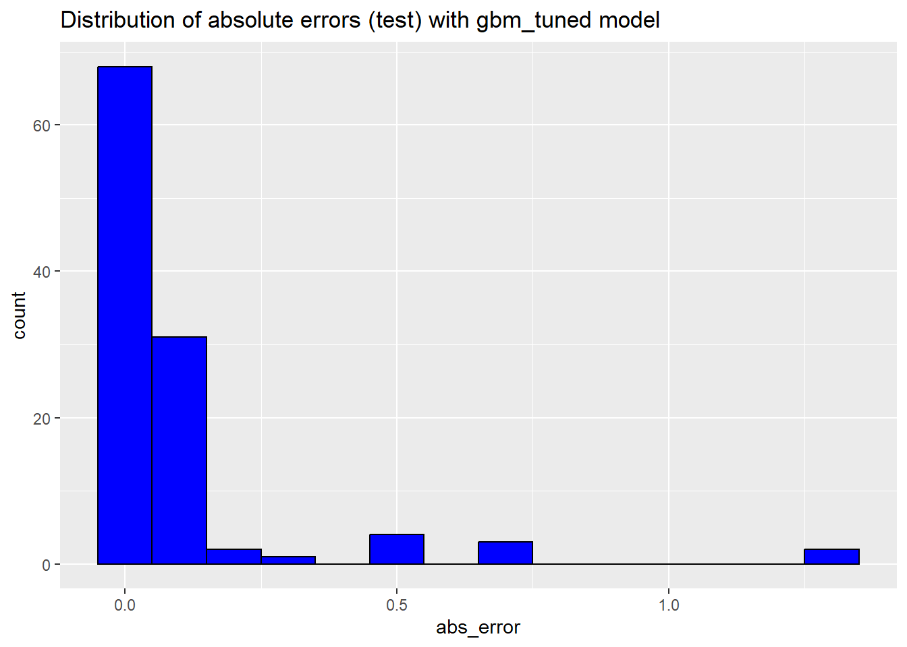
Summary of Gradient Boosting Machine The naive MAE represents the error when predicting the mean value of the quality of sleep for all instances, serving as a baseline for comparison. The substantial reduction in MAE from the naive model (1.08) to the tuned GBM model (0.11) on the testing set indicates a significant improvement in predictive accuracy. Similarly, the training MAE for the GBM model (0.08) is much lower than the naive training MAE (1.03), demonstrating that the model effectively learned the patterns in the training data. These results suggest that the GBM model is well-tuned and capable of making accurate predictions, with minimal error, on both the training and testing datasets.